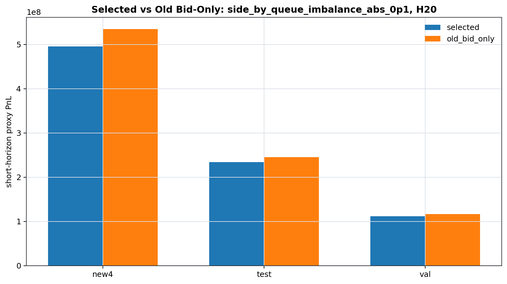
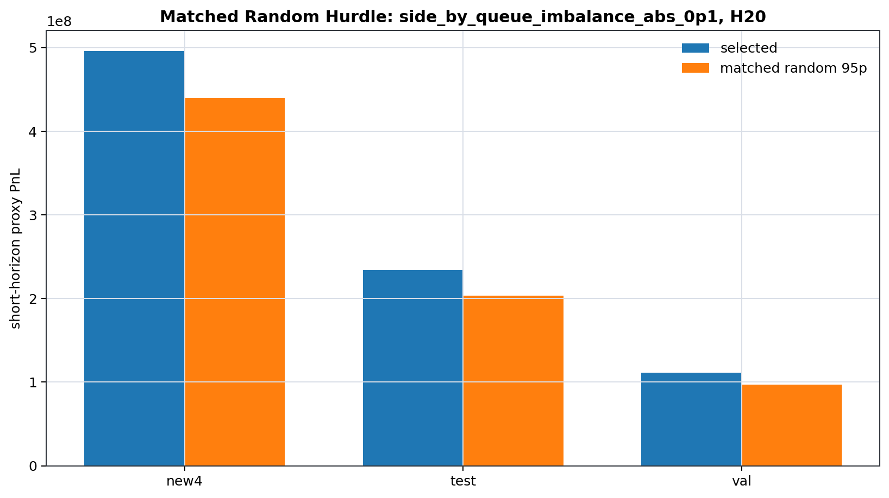
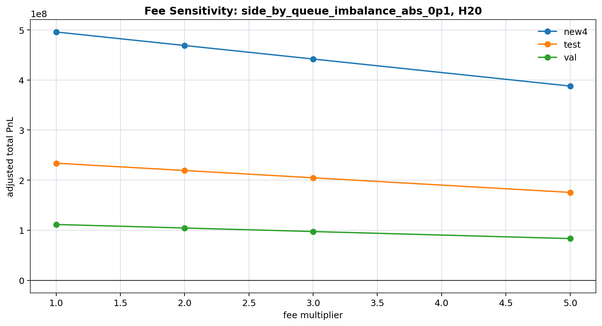
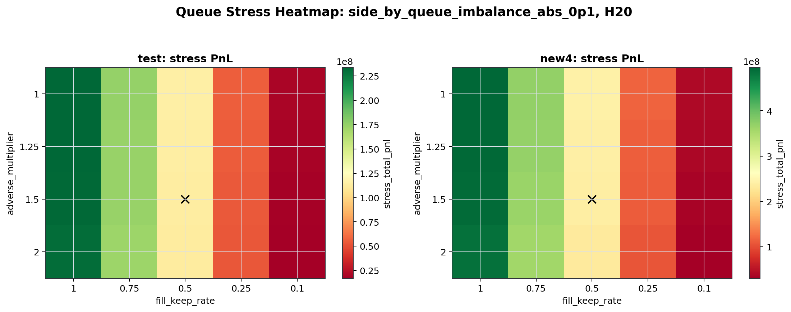
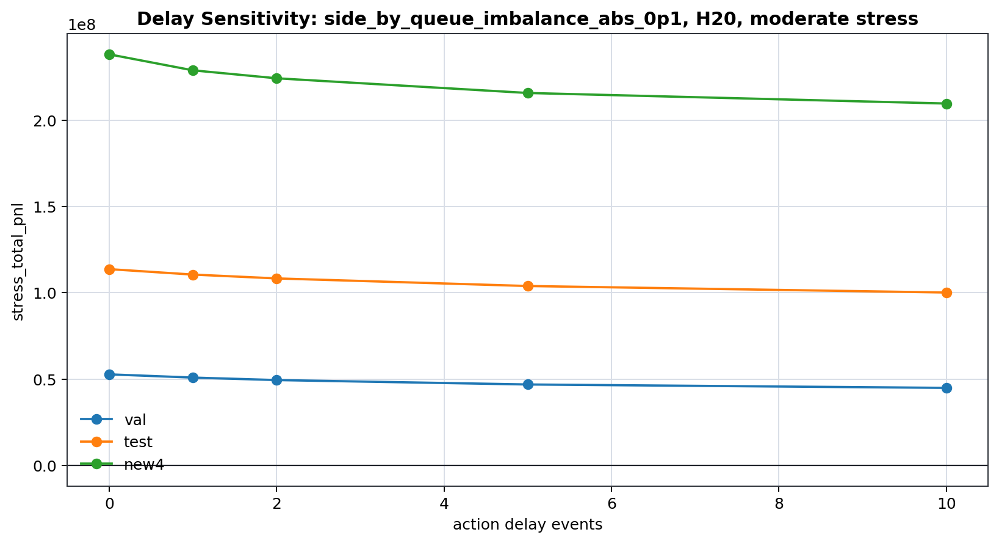

If queue_imbalance > +0.1 quote bid; if queue_imbalance < -0.1 quote ask; otherwise no_quote.
Safe claim: non-trivial L2 quote-ranking signal under short-horizon proxy markout.
Forbidden claim: real-world profitability, true queue replay, or FPGA-proven PnL.
| claim | status | evidence | safe_wording |
|---|---|---|---|
| Selected policy beats matched random 95p | PASS | selected_policy_vs_controls.csv and exact_random_oos_summary.csv | The selected queue-imbalance rule beats matched random 95p under the proxy short-horizon markout audit. |
| Selected policy beats old bid-only absolute PnL | FAIL | selected_minus_old_bid_only is negative on val/test/NEW4 | The selected rule is not an absolute PnL replacement for old bid-only; it is evidence of non-trivial L2 ranking/excess signal. |
| This is true queue replay / Real-world profitability | FORBIDDEN | No aggressor_side, true order IDs, queue position, acknowledgements, or exchange matching replay. | This is a short-horizon sequential proxy markout audit, not true exchange replay or proof of real-world profitability. |
| split | total_pnl | old_bid_only_pnl | selected_minus_old_bid_only | matched_random_95p | beats_random_95p | beats_old_bid_only |
|---|---|---|---|---|---|---|
| new4 | 495,871,045 | 534,754,500 | -38,883,455 | 439,163,397 | True | False |
| test | 233,869,570 | 245,095,685 | -11,226,115 | 203,051,736 | True | False |
| val | 111,460,580 | 116,710,045 | -5,249,465 | 96,922,385 | True | False |

In 1000 exact random trials, no random trial exceeded the selected policy. Therefore empirical p-value < 0.001.
| split | model_pnl | exact_random_95p | beats_exact_random_95p | empirical_p_value_display |
|---|---|---|---|---|
| test | 233,869,570 | 203,046,617 | True | <0.001 |
| new4 | 495,871,045 | 439,142,218 | True | <0.001 |

`eligible_for_final_selection_at_1x` is meaningful only on validation. Test and NEW4 are frozen evaluation splits and are not used for selection.
| split | policy_id | horizon | base_total_pnl_fee_1x | selected_action_count | break_even_fee_multiplier | max_tested_fee_multiplier_positive | eligibility_column_note |
|---|---|---|---|---|---|---|---|
| new4 | side_by_queue_imbalance_abs_0p1 | 20 | 495,871,045 | 1799304 | 19.37 | 5 | `eligible_for_final_selection_at_1x` is meaningful only on validation. Test and NEW4 are frozen evaluation splits and are not used for selection. |
| test | side_by_queue_imbalance_abs_0p1 | 20 | 233,869,570 | 971600 | 17.05 | 5 | `eligible_for_final_selection_at_1x` is meaningful only on validation. Test and NEW4 are frozen evaluation splits and are not used for selection. |
| val | side_by_queue_imbalance_abs_0p1 | 20 | 111,460,580 | 468627 | 16.86 | 5 | `eligible_for_final_selection_at_1x` is meaningful only on validation. Test and NEW4 are frozen evaluation splits and are not used for selection. |

Moderate stress = fill_keep_rate 0.5, adverse_multiplier 1.5, delay 0.
`eligible_for_final_selection_at_1x` is meaningful only on validation. Test and NEW4 are frozen evaluation splits and are not used for selection.
| split | stress_total_pnl | selected_action_count | win_rate | max_drawdown | positive_under_stress |
|---|---|---|---|---|---|
| val | 52,703,425 | 468627 | 0.9242 | 1,035,450 | True |
| test | 113,651,665 | 971600 | 0.949 | 47,425 | True |
| new4 | 238,079,178 | 1799304 | 0.9311 | 90,418 | True |

